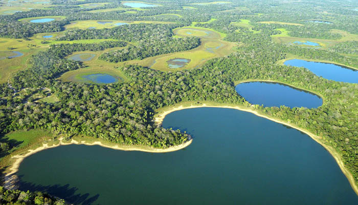

Nature and LGBTQIA+ Hospitality
In the heart of the country, the Central-West surprises with its wild nature and growing LGBTQIA+ visibility. Brasília, with its modern architecture and vibrant arts scene, is also a progressive hub with safe and welcoming spaces. The Pantanal and Chapada dos Veadeiros offer unique ecotourism experiences, ideal for those seeking reconnection with nature and alternative communities. The region attracts LGBTQIA+ travelers in search of spirituality, sustainability, and transformative experiences.
What makes the Central-West stand out is the harmony between freedom and introspection it offers. Sacred waterfalls, mystical landscapes, and holistic retreats make it a magnet for queer travelers interested in healing journeys and conscious travel. Whether meditating under the stars or joining inclusive wellness gatherings, visitors find a space where being true to oneself is part of the natural flow of life.